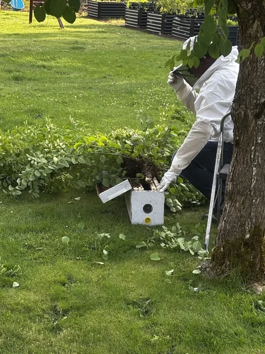
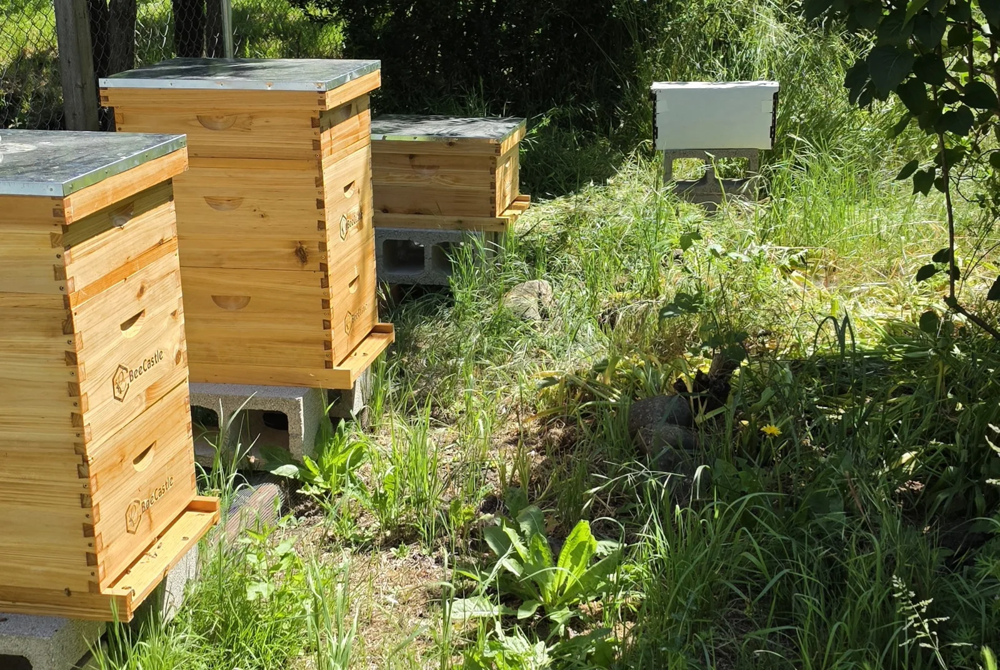
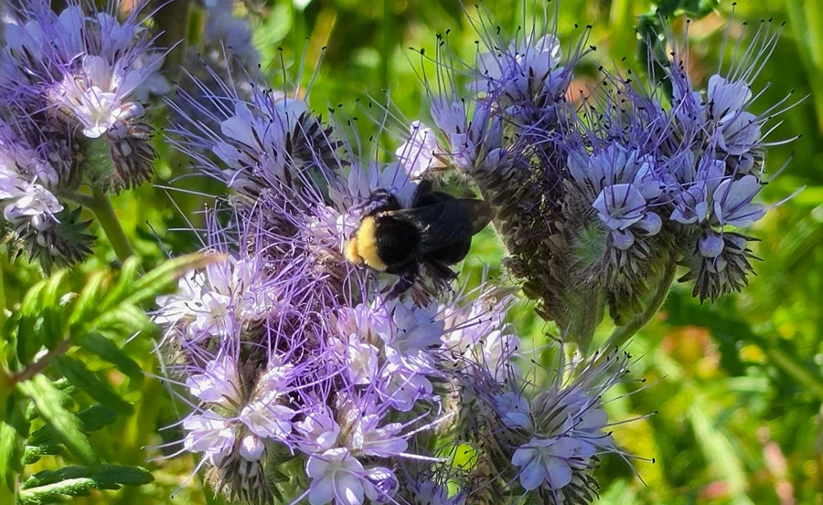

From a swarm to a home
Butera was my first successful swarm capture. The Anchor Colony came from an altogether different place: a cavity inside a mailbox anchor.
Read their beginnings →HoneyTide Apiary · Springfield, Oregon
Nature's Rhythm. A Bee's Blessing.
I’m Camron, the beekeeper behind HoneyTide. I’m building a small apiary in Oregon’s Willamette Valley, caring for honey bees and learning from the land around them.

The person behind the veil
HoneyTide began with two nucleus colonies, Zion and Tortooga, in spring 2026. Swarm captures soon became part of the story, too, bringing new colonies and plenty of unexpected lessons.
I care about the everyday work: looking through the frames, watching what’s flowering, and figuring out what each colony needs. I want this business to grow from that care, with honey and beeswax to share when the bees have enough to spare.
A little more about me →Life around the hives

Butera was my first successful swarm capture. The Anchor Colony came from an altogether different place: a cavity inside a mailbox anchor.
Read their beginnings →
The flowers around us feed many kinds of pollinators. Learning about native bees and the places they nest is part of caring for this landscape, too.
Learn about pollinators →From the hive, in season
I’m working toward small-batch local honey and beeswax goods. What I can offer will depend on the season and what the colonies can spare.
Products are not currently available for regular sale. You’re welcome to ask about future availability or follow along on Facebook for updates.
Ask about availabilitySpringfield · Eugene · Lane County
Send me a note. When I’m available, I may also be able to help with easy-access honey bee swarms. Include a photo, location, and how high the bees are from the ground. I don’t offer removals that involve opening walls, roofs, or other building structures.